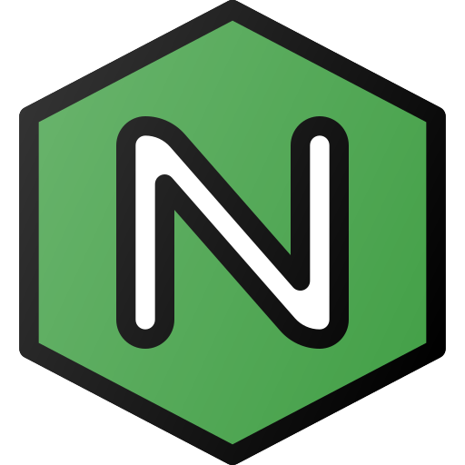
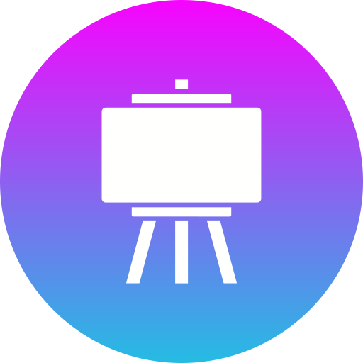
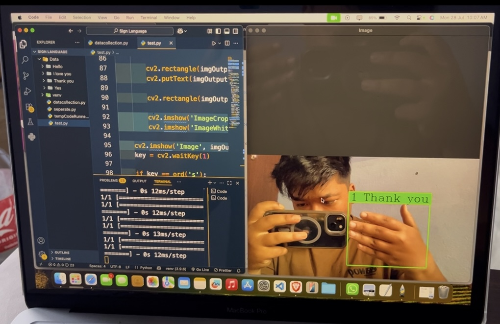
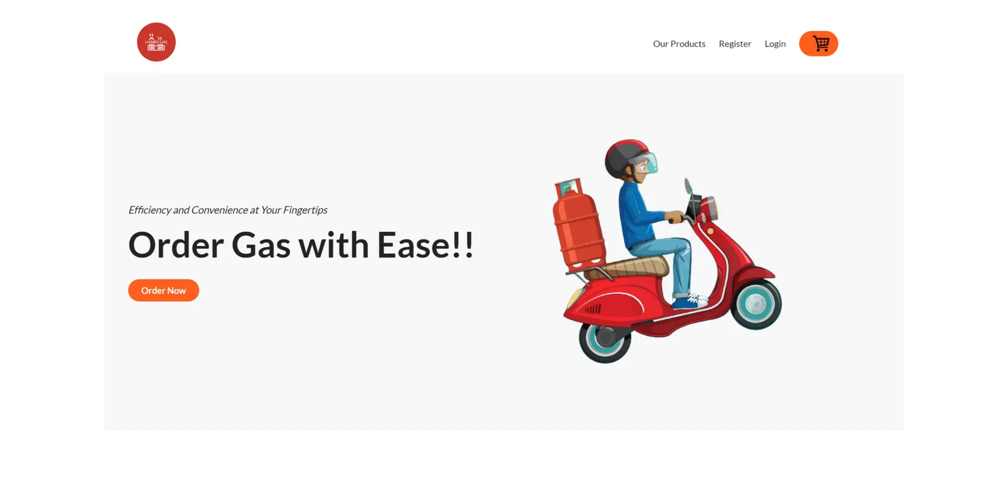
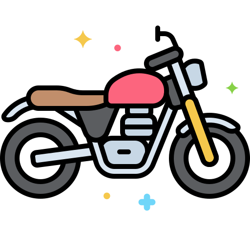

MP / 2058field profile
system profile / online
Engineer with a habit of fixing what's broken..
I’m Manjit Pun a DevOps Engineer focused on infrastructure automation, network reliability, and Linux systems administration.
I build robust systems through CI/CD pipelines, thoughtful network design, and a constant drive to turn operational challenges into seamless, dependable solutions."
- RoleIT Engineer
- DegreeBE Information Technology
- FocusLinux · IoT · Security · Networking
Try help, about, skills, projects, contact, resume, or clear.
SESSION 01interactive command console
01 / profile
A practical builder with a systems mindset.
"From writing code to configuring networks, I handle the full path from idea to running system."
Core focus
Thoughtful digital solutions
From deployment pipelines to network configs, I focus on building systems that just work — no surprises.
Academic base
Bachelor of Engineering in Information Technology
Trained as an engineer to think in systems — a mindset I now apply to infrastructure, networks, and automation.
Working style
Clear, curious, and detail-oriented
I care about maintainable implementation, useful interactions, and continuing to learn from every project cycle.
02 / capability modules
Tools I keep in the kit.
Organized like a terminal readout, with the technologies and disciplines already present across my portfolio work.
manjit@linux:~/capabilities
modules loaded
web.stack01
 Python
Python
systems.security02
Linux
Penetration Testing
Dictionary Attack
IoT Development
 Database Management
Database Management
Database Management

NGINXcreative.tools03
 Adobe Lightroom
Adobe Lightroom

CanvaSupporting visual polish and clear communication alongside technical implementation.
03 / project archive
Selected missions, built for real problems.
Each project reflects an interest in making complex technology useful—from intelligent traffic systems to everyday services.
 01
01
Flow Sync Traffic Optimization
Smart traffic optimization that adjusts signal timing from real-time vehicle density, combining computer vision with a practical web interface.
Read mission briefing
Flow Sync is a smart traffic optimization web application designed to reduce congestion by dynamically adjusting traffic light durations based on real-time vehicle density. For this project, I employed a combination of Python-Django for the backend and React.js for the frontend, with YOLO (You Only Look Once) for vehicle detection through computer vision. The system processes live video feeds to detect the number of vehicles in each lane and uses this data to optimize traffic signal timings accordingly. This project not only highlights my skills in full-stack development but also demonstrates my interest in integrating emerging technologies like AI and IoT to solve urban challenges. It represents a practical approach to making smart cities more efficient and sustainable.

02Sign Language Recognition
A real-time sign-language recognition system using hand tracking, computer vision, and deep learning.
Read mission briefing
Developed a real-time sign language recognition system using computer vision and deep learning. The application detects hand gestures via webcam using cvzone's HandTrackingModule, processes the hand image, and classifies the gesture using a trained Keras/TensorFlow model. The system utilizes OpenCV for video processing and TFLite/Keras for efficient model inference. It supports real-time gesture classification with dynamic bounding boxes and live label overlays. This project showcases skills in computer vision, deep learning, and real-time application development using Python.

03LPG Gas Ordering System
A backend-focused ordering system built around authentication, inventory management, payments, and real-time order updates.
Read mission briefing
The LPG Gas Ordering System is a robust backend solution designed to streamline the process of ordering liquefied petroleum gas online. I developed this system to handle critical functions such as user authentication, inventory management, and real-time order processing. One of the key features of the system is its seamless integration with secure payment gateways, allowing customers to place and pay for orders with confidence. Additionally, I implemented real-time order tracking to provide users with live updates on their order status, enhancing transparency and user experience. This project showcases my proficiency in backend development and my ability to build scalable, secure systems that meet real-world commercial needs.
04
Laptop Hospital Web App
A user-friendly e-commerce experience for laptops and accessories, designed around a responsive, intuitive buying journey.
Read mission briefing
The Laptop Hospital Web App is a user-friendly e-commerce platform designed to simplify the buying experience for laptops and related accessories. I developed this web application with a focus on intuitive design and functionality, ensuring users could easily browse, search, and purchase products. The platform features a clean UI/UX and was built to support future enhancements such as customer reviews, inventory tracking, and promotional tools. My work on this project demonstrates a strong understanding of front-end design principles as well as backend integration, resulting in a responsive and engaging shopping experience. This project also reflects my ability to align technical solutions with business goals and user expectations.
04 / off-duty log
Curiosity beyond the terminal.
The same curiosity that informs technical work follows me into exploration, music, photography, and new tools.

01Biking
Gaming
Playing Guitar
Exploring Cybersecurity Tools
 05
05Photography
05 / credentials
Training and recognition.
Select a certificate to inspect it in a focused, accessible preview.
06 / establish contact
Have a project in mind?
Open a secure line.
For collaboration, ideas, or a conversation about technology, choose a channel below.